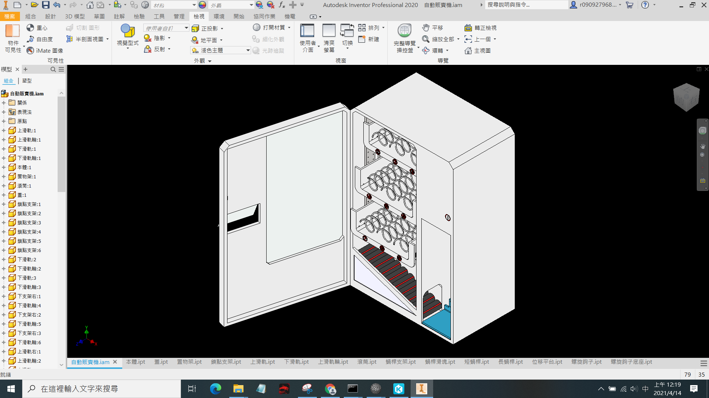

協同產品設計實習
stage2-bg11
Created by 40823209 and 40823210and40823201 and40823217專題名稱:免彎腰販賣機

設計動機
思考到一些老人、行動不便者、受傷的人可能無法彎腰去拿取物品， 所以我們將商品出口設置在右側中間。當我們買完商品時，商品即會掉落於斜面， 且滾動至右側平台，而當平台偵測到重量，平台就會上升至出口處， 購買者即可不必彎腰就可以拿去商品。
設計概念
將商品放入彈簧中，然後使彈簧旋轉讓商品掉落，掉到下 方滾輪處，利用滾輪旋轉使商品掉進旁邊的平台，讓齒輪跟螺 桿的作動，讓平台上升到一定高度，給消費者拿取。
零件各部位名稱
本體
.png)
玻璃窗
.png)
外蓋
.png)
上軌道
.png)
下軌道
.png)
鎖點支架
.png)
上滑軌輪
.png)
置物架X3
.png)
螺旋鉤子X9
.png)
滾筒X10
.png)
位移平台
.png)
短蜗桿
.png)
長蜗桿
.png)
蜗桿支架
.png)
蜗桿滑塊
.png)
取物窗
.png)
組合圖
.png)
inventor模擬
長蜗桿細節圖
.png)
滾筒細節圖
.png)
模擬問題
第一次模擬
一開始因為未與齒輪做連結而導致無法協調

第二次模擬
雖然與齒輪做連結了，因為齒輪無法帶動板子上升 而導致破圖，使板子上升到齒輪上面
第三次模擬
重新調整板子與齒輪的連結關係後，雖然可以透過旋轉尺 齒輪來使板子上升，但與螺桿的配合還是怪怪的，然後無 法上升到指定高度。之後我們將下方滾輪也讓它旋轉，使 商品能滾進平台。還有上方的彈簧，讓它能旋轉使商品能掉 落至滾輪處。

第四次模擬
修正第三次的問題後，現在可以上升至正常高度，且齒輪與蜗 桿的配合也不會這麼奇怪。再來我們將商品放入了彈簧中，並 讓它旋轉後掉到滾進平台，上升到可拿取的地方。

模擬補充說明
[補充說明]:商品再經由旋轉掉落的時候，因為會撞到外蓋的關係，所以會直接掉 到滾輪區，然後滑落，但是因為在模擬的時候蓋住外殼我們會看不見裡面，所 以我們會將外蓋打開，以便觀看，但這也導致了，商品失去了一個反彈的力讓 它掉到滾輪區，所以變得每次都會掉出來外面，所以我們只能將置物架設定為 無碰撞，讓商品直接掉落到滾輪區，已完成這次的模擬。(詳圖如下)
模擬

參考文獻
專利公告號:I721612
專利名稱:販賣機出貨系統及其運作方法
專利販賣機示意圖
專利販賣機的運作概念
心得
從二人轉換到四人協同的過程，雖然是多了兩個人，但意見也就多了多，每個人的想法都不一樣，怎麼去結合成一項產品，溝通尤為重要。我們也去利用了gitter去達成不在同一空間的問題，去討論出我們這次的主題[免彎腰自動販賣機]。之後希望在八人合作時，能克服每個人不同的意見，然後統整在一起，能做出更不一樣的東西。